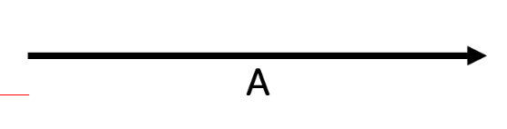
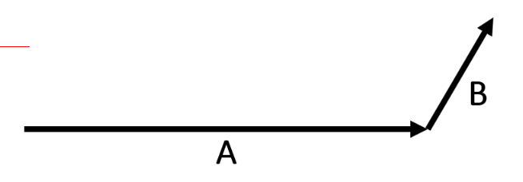
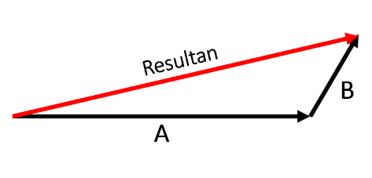
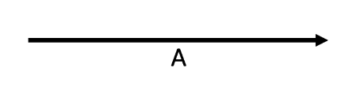
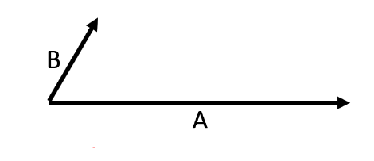
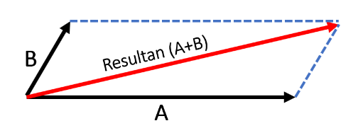

B. PENJUMLAHAN VEKTOR
Hasil penjumlahan vektor disebut dengan vektor resultan. Penjumlahan vektor dapat dilukis dengan dua metode:
METODE POLIGON
METODE JAJARGENJANG
(Traditional Games Return, 2020)
Perhatikan permainan balogo pada gambar ini. Jika permainan ini dilihat dari atas maka pergerakan logo sebagai berikut.
Perhatikan logo berwarna merah, saat logo merah dipukul dan meluncur hingga bertabrakan logo hijau maka lintasan logo merah berbelok. Perpindahan adalah besaran vektor. Panah berwarna hitam menunjukan vektor yang terbentuk, yaitu 2 buah vektor dengan panjang dan arah yang berbeda. Kedua vektor ini dapat kita jumlahkan dengan menggambarnya dengan “metode poligon” dan “metode jajargenjang”.
METODE POLIGON
- Lukis salah satu vektor.
Gambar 2.2 Satu vektor - Lukis vektor kedua dengan titik tangkapnya di ujung vektor pertama.
Gambar 2.3 Dua vektor - Lukis vektor resultan dengan titik tangkap di pangkal vektor pertama dan ujungnya di ujung vektor kedua.
Gambar 2.4 Dua vektor dan vektor resultan. - Jika terdapat lebih dari dua vektor maka ulangi langkah 2 untuk vektor yang lain.
METODE JAJARGENJANG
- Lukis vektor pertama dan vektor kedua dengan titik pangkal berimpit.
Gambar 2.5 Satu vektor - Lukis sebuah jajargenjang dengan kedua vektor itu sebagai sisi-sisinya
Gambar 2.6 Dua vektor - Vektor resultan adalah diagonal jajargenjang yang titik pangkalnya sama dengan titik pangkal kedua vektor.
Gambar 2.7 Dua vektor dan vektor resultan.
(Kanginan, Marthen, 2016)